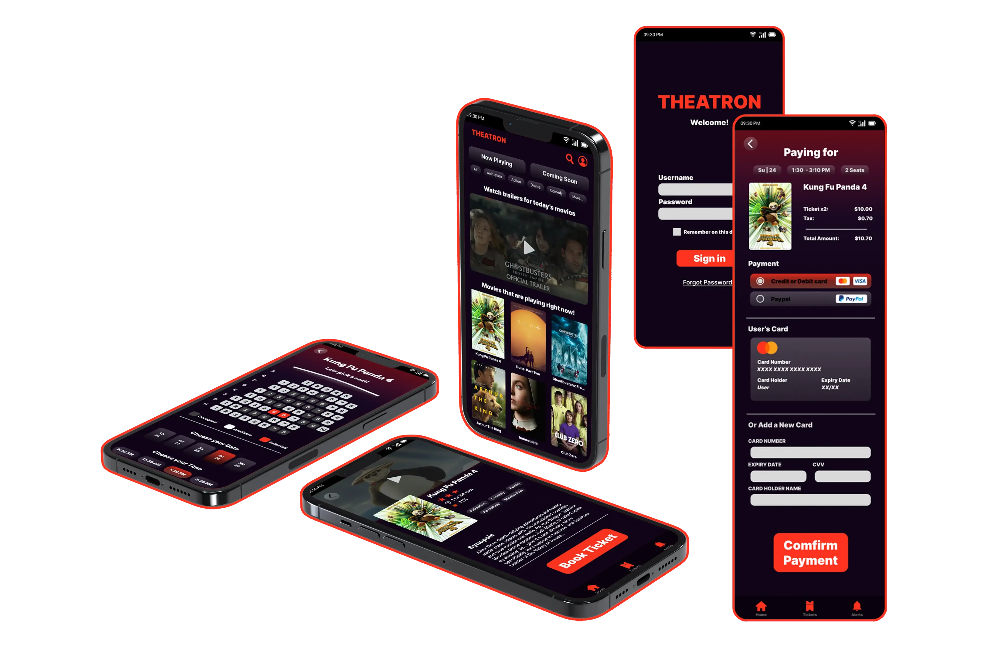
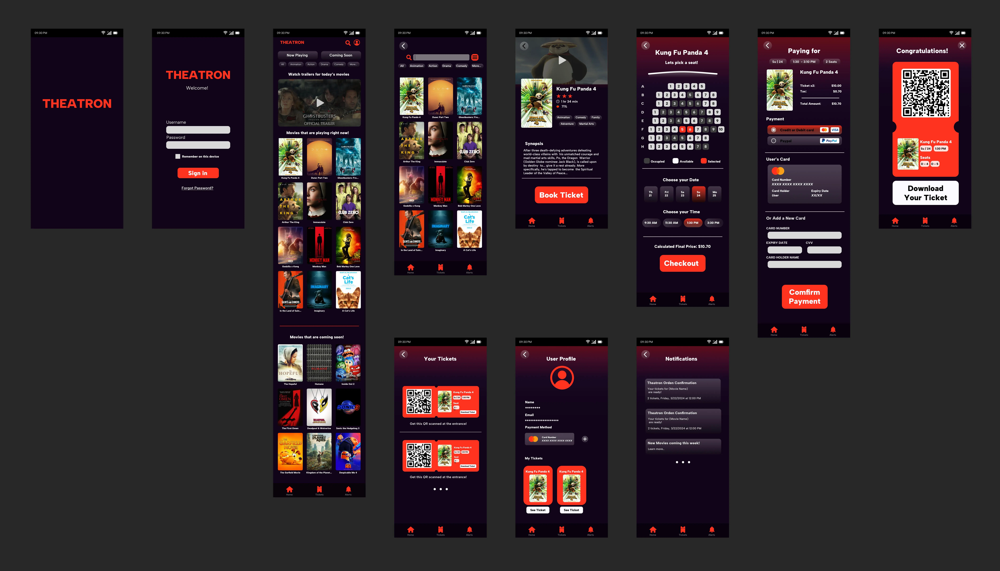

Project Overview
MY ROLE
UX/UI Designer & Researcher
TIMELINE
4 Weeks
DELIVERABLES
User Research, High-Fidelity Prototype, Mobile-First Design
1. Evidence: Empathy Mapping
2. Evidence: User Personas

Before User Testing
After User Testing

Impact & Key Learnings
Value Delivered (Concept)
Personal Growth